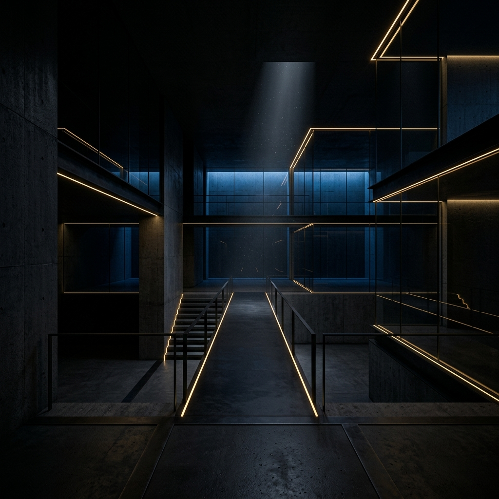

Tecnologia avançada
com foco humano.
Plataformas proprietárias de inteligência artificial, visão computacional e análise estratégica criadas para transformar complexidade em clareza, percepção e decisão.
Não entregamos dashboards.
Entregamos clareza.
A ZAKA cria plataformas proprietárias de inteligência aplicadas a ambientes críticos, estratégicos e altamente complexos.
Tecnologia silenciosa.Inteligência invisível.
Experiência humana.
O excesso de informação tornou a decisão mais difícil.
Hoje, empresas, governos e operações críticas produzem dados o tempo todo.
O problema não é acesso à informação.É transformar informação em percepção real.
Transformamos dados em percepção operacional.
A ZAKA conecta:
- Inteligência artificial
- Visão computacional
- Comportamento
- Contexto
- Análise preditiva
- Automação estratégica
em plataformas proprietárias de inteligência contínua.
Nossas Plataformas.

CORTEX Eleitor
Inteligência eleitoral preditiva.

CORTEX Governo
Gestão pública e percepção estratégica.
CORTEX Infra
Monitoramento inteligente de infraestrutura.
CORTEX Care
Inteligência aplicada à experiência humana.

CORTEX Food
Inteligência para operações gastronômicas.
Specter by ZAKA
Inteligência jurídica avançada.
O que torna a ZAKA diferente.
Plataformas proprietárias
Inteligência contextual
Visão computacional
IA aplicada à operação real
Inteligência preditiva
Correlação massiva de dados
Tecnologia centrada em pessoas
Arquitetura escalável
Operação em tempo real
Inteligência estratégica contínua
Tecnologia silenciosa.
Impacto real.
Acreditamos que a melhor tecnologia é aquela que desaparece para que a experiência humana apareça.
Como Trabalhamos.
Transforme complexidade
em percepção.
A ZAKA cria plataformas avançadas de inteligência para organizações que precisam operar com mais clareza, velocidade e precisão.